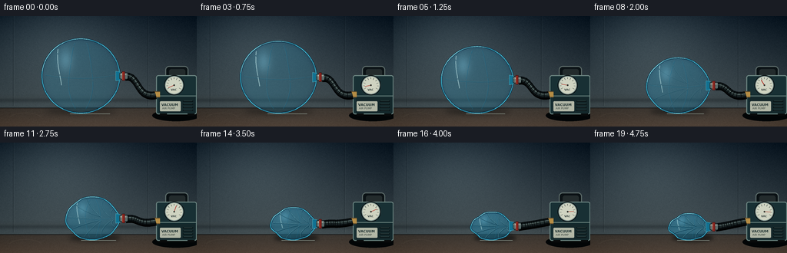
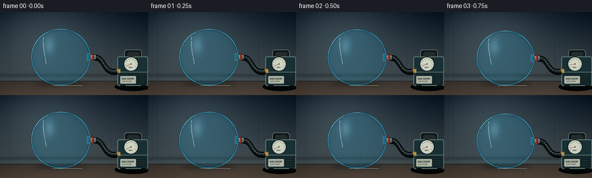

CODING AGENTS AS PIXEL WORLD MODELS
traex/GPT-5.6-Sol · phygen_018
点击播放 · 原生 RGB 像素
逐轮保存的候选
回放视频、检查图与代码变化。
每份候选均可单独播放。实际图片检查记录在下方工具轨迹中。
候选 01播放与检查图
点击播放 · 原生 RGB 像素

展开代码变化
--- 上一保存版本
+++ 本次保存版本
@@ -0,0 +1,337 @@
+from pathlib import Path
+import math
+import numpy as np
+import cv2
+from PIL import Image, ImageDraw, ImageFont, ImageFilter
+import artifact_io
+
+W, H, N, S = 256, 144, 20, 4
+SW, SH = W*S, H*S
+HERE = Path(__file__).resolve().parent
+rng = np.random.default_rng(18018)
+
+
+def sc(v):
+ return int(round(v*S))
+
+
+def smoothstep(x):
+ x = np.clip(x, 0.0, 1.0)
+ return x*x*(3.0-2.0*x)
+
+
+def font(size, bold=False):
+ p = '/usr/share/fonts/truetype/dejavu/DejaVuSans-Bold.ttf' if bold else '/usr/share/fonts/truetype/dejavu/DejaVuSans.ttf'
+ try:
+ return ImageFont.truetype(p, sc(size))
+ except Exception:
+ return ImageFont.load_default()
+
+
+def make_background():
+ yy, xx = np.mgrid[0:SH, 0:SW]
+ y = yy / S
+ x = xx / S
+ horizon = 119.5
+ wall_t = np.clip(y / horizon, 0, 1)
+ top = np.array([19., 31., 42.])
+ bottom = np.array([67., 78., 82.])
+ arr = top[None,None,:]*(1-wall_t[:,:,None]) + bottom[None,None,:]*wall_t[:,:,None]
+ # broad studio light from upper left
+ glow = np.exp(-(((x-76)/92)**2 + ((y-28)/65)**2))[:,:,None]
+ arr += glow*np.array([27., 30., 29.])
+ # tabletop
+ table = y >= horizon
+ depth = np.clip((y-horizon)/(H-horizon), 0, 1)
+ table_col = np.zeros_like(arr)
+ table_col[:,:,0] = 61 + 24*depth
+ table_col[:,:,1] = 56 + 16*depth
+ table_col[:,:,2] = 51 + 11*depth
+ arr[table] = table_col[table]
+ # fixed fine texture
+ noise_small = rng.normal(0, 1, (H, W)).astype(np.float32)
+ noise = cv2.resize(noise_small, (SW, SH), interpolation=cv2.INTER_CUBIC)
+ arr += noise[:,:,None]*1.35
+ # vignette
+ vig = np.clip(((x-W/2)/(W*.72))**2 + ((y-H/2)/(H*.85))**2, 0, 1)[:,:,None]
+ arr -= 20*vig
+ arr = np.clip(arr, 0, 255).astype(np.uint8)
+ im = Image.fromarray(arr, 'RGB')
+ d = ImageDraw.Draw(im, 'RGBA')
+ # soft architectural panels / lab backdrop
+ for px in (17, 192):
+ d.line((sc(px), 0, sc(px), sc(117)), fill=(10,19,25,75), width=sc(.8))
+ d.line((sc(px+1.2), 0, sc(px+1.2), sc(117)), fill=(140,155,155,20), width=sc(.5))
+ # out-of-focus horizontal shelf
+ shelf = Image.new('RGBA', (SW,SH), (0,0,0,0)); sd = ImageDraw.Draw(shelf)
+ sd.rectangle((0,sc(105),SW,sc(111)), fill=(8,14,18,100))
+ sd.rectangle((0,sc(104.5),SW,sc(106)), fill=(148,158,153,35))
+ shelf = shelf.filter(ImageFilter.GaussianBlur(sc(2.0)))
+ im = Image.alpha_composite(im.convert('RGBA'), shelf).convert('RGB')
+ d = ImageDraw.Draw(im, 'RGBA')
+ d.line((0,sc(horizon),SW,sc(horizon)), fill=(9,14,17,150), width=sc(1.0))
+ # table grain and a few scuffs
+ for i in range(18):
+ gy = 122 + i*1.35 + rng.uniform(-.4,.4)
+ shade = int(rng.integers(8,19))
+ d.line((0,sc(gy),SW,sc(gy+rng.uniform(-.15,.15))), fill=(195,166,129,shade), width=sc(.35))
+ d.arc((sc(12),sc(126),sc(54),sc(141)), 190, 348, fill=(218,190,152,18), width=sc(.6))
+ return np.array(im, dtype=np.uint8)
+
+BASE = make_background()
+
+
+def bezier4(p0,p1,p2,p3,n=60):
+ t=np.linspace(0,1,n)
+ a=((1-t)**3)[:,None]*np.array(p0)
+ b=(3*(1-t)**2*t)[:,None]*np.array(p1)
+ c=(3*(1-t)*t**2)[:,None]*np.array(p2)
+ d=(t**3)[:,None]*np.array(p3)
+ return a+b+c+d
+
+
+def draw_pump_and_hose(im, collapse, valve_y, frame_index):
+ # Pump is deliberately compact and partly cropped: a practical bench vacuum pump.
+ d=ImageDraw.Draw(im,'RGBA')
+ # pump cast shadow
+ d.ellipse((sc(198),sc(122),sc(260),sc(137)), fill=(2,5,6,105))
+ # rear carry handle
+ d.rounded_rectangle((sc(215),sc(65),sc(245),sc(83)), radius=sc(5), fill=(11,18,21,255), outline=(93,108,106,180), width=sc(1.2))
+ d.rounded_rectangle((sc(220),sc(69),sc(241),sc(82)), radius=sc(3), fill=(35,43,44,255))
+ # machine body
+ d.rounded_rectangle((sc(203),sc(77),sc(256),sc(128)), radius=sc(3), fill=(24,48,52,255), outline=(107,132,128,210), width=sc(1.2))
+ d.rectangle((sc(207),sc(106),sc(254),sc(126)), fill=(20,39,42,255))
+ d.line((sc(205),sc(104),sc(255),sc(104)), fill=(131,153,145,120), width=sc(.8))
+ # vent slats
+ for y in (111,115,119,123):
+ d.line((sc(238),sc(y),sc(251),sc(y)), fill=(5,14,16,210), width=sc(1.25))
+ d.line((sc(239),sc(y-.5),sc(250),sc(y-.5)), fill=(99,124,119,45), width=sc(.35))
+ # feet
+ d.rectangle((sc(208),sc(127),sc(217),sc(130)), fill=(8,10,10,255))
+ d.rectangle((sc(244),sc(127),sc(253),sc(130)), fill=(8,10,10,255))
+ # label
+ d.rounded_rectangle((sc(208),sc(111),sc(235),sc(124)), radius=sc(1.2), fill=(178,183,166,220))
+ d.text((sc(210),sc(113)), 'VACUUM', font=font(4.4,True), fill=(27,45,45,255))
+ d.text((sc(211),sc(118.2)), 'AIR PUMP', font=font(3.5), fill=(46,57,53,230))
+ # analog gauge
+ gc=(226.5,90); gr=12.0
+ d.ellipse((sc(gc[0]-gr-1),sc(gc[1]-gr-1),sc(gc[0]+gr+1),sc(gc[1]+gr+1)), fill=(7,13,15,230))
+ d.ellipse((sc(gc[0]-gr),sc(gc[1]-gr),sc(gc[0]+gr),sc(gc[1]+gr)), fill=(207,211,193,255), outline=(124,146,142,255), width=sc(1))
+ # scale marks around upper 240 degrees
+ for k in range(11):
+ ang=math.radians(150 + k*24)
+ r1=8.3 if k%2 else 7.6
+ p1=(gc[0]+r1*math.cos(ang),gc[1]+r1*math.sin(ang))
+ p2=(gc[0]+10.0*math.cos(ang),gc[1]+10.0*math.sin(ang))
+ d.line(tuple(map(sc,p1+p2)), fill=(37,49,48,220), width=sc(.55))
+ d.text((sc(222.2),sc(94.0)), 'VAC', font=font(3.6,True), fill=(43,55,53,255))
+ # needle progressively indicates stronger vacuum, with tiny mechanical vibration
+ ang=math.radians(157 + 205*collapse + math.sin(frame_index*2.1)*1.2*collapse)
+ np2=(gc[0]+8.1*math.cos(ang),gc[1]+8.1*math.sin(ang))
+ d.line((sc(gc[0]),sc(gc[1]),sc(np2[0]),sc(np2[1])), fill=(176,39,28,255), width=sc(.85))
+ d.ellipse((sc(gc[0]-.9),sc(gc[1]-.9),sc(gc[0]+.9),sc(gc[1]+.9)), fill=(46,49,44,255))
+ # brass inlet on pump face
+ d.rectangle((sc(199),sc(98),sc(208),sc(106)), fill=(95,74,42,255))
+ d.rectangle((sc(201),sc(99),sc(208),sc(105)), fill=(181,141,69,255))
+ # flexible hose from moving valve to fixed inlet
+ start=(162.5,valve_y)
+ end=(202.0,102.0)
+ pts=bezier4(start,(181,valve_y-3),(177,107),(202,102),70)
+ ptsi=[(sc(x),sc(y)) for x,y in pts]
+ # hose shadow, outer rubber, inner highlight
+ d.line([(x+sc(.8),y+sc(1.7)) for x,y in ptsi], fill=(0,0,0,125), width=sc(9), joint='curve')
+ d.line(ptsi, fill=(9,14,16,255), width=sc(8.2), joint='curve')
+ d.line(ptsi, fill=(31,42,43,255), width=sc(4.3), joint='curve')
+ d.line([(x,y-sc(.8)) for x,y in ptsi], fill=(112,131,127,75), width=sc(.8), joint='curve')
+ # reinforcing ribs on hose
+ for j in range(7,64,7):
+ x,y=pts[j]; vx,vy=pts[min(j+1,69)]-pts[max(j-1,0)]; L=max(math.hypot(vx,vy),1e-6)
+ nx,ny=-vy/L,vx/L
+ d.line((sc(x-4.1*nx),sc(y-4.1*ny),sc(x+4.1*nx),sc(y+4.1*ny)), fill=(3,7,8,170), width=sc(.75))
+ return im
+
+
+def circular_diff(a,b):
+ return np.arctan2(np.sin(a-b),np.cos(a-b))
+
+
+def ball_geometry(c):
+ rx=50.5-24.0*c
+ ry=48.5-31.2*c
+ cx=105.0+24.0*c
+ cy=78.0+31.7*c
+ th=np.linspace(0,2*np.pi,240,endpoint=False)
+ # Increasingly uneven, buckled membrane. The rightmost point stays at the extraction valve.
+ wave=(0.018*np.sin(3*th+0.3)+0.025*np.sin(5*th-1.2)+0.014*np.sin(9*th+0.7))*c**1.4
+ anchor=(1-np.exp(-(circular_diff(th,0)/0.30)**2))
+ f=1+wave*anchor
+ # paired cave-ins are the characteristic shell buckling under external pressure
+ f-=0.145*c**1.25*np.exp(-(circular_diff(th,-0.62)/0.34)**2)
+ f-=0.105*c**1.45*np.exp(-(circular_diff(th, 0.58)/0.31)**2)
+ f-=0.085*c**1.8*np.exp(-(circular_diff(th,-2.15)/0.34)**2)
+ f-=0.055*c**1.8*np.exp(-(circular_diff(th, 2.45)/0.28)**2)
+ # force exact attachment point at theta 0 while surrounding film necks inward
+ f += (1-f[0])*np.exp(-(circular_diff(th,0)/0.16)**2)
+ x=cx+rx*np.cos(th)*f
+ y=cy+ry*np.sin(th)*f
+ return cx,cy,rx,ry,np.column_stack([x,y]),f
+
+
+def add_ball(im, c, frame_index):
+ cx,cy,rx,ry,pts,f = ball_geometry(c)
+ poly=np.round(pts*S).astype(np.int32)
+ mask=np.zeros((SH,SW),np.uint8)
+ cv2.fillPoly(mask,[poly],255,lineType=cv2.LINE_AA)
+ base=np.asarray(im.convert('RGB')).astype(np.float32)
+ yy,xx=np.mgrid[0:SH,0:SW]
+ X=xx/S; Y=yy/S
+ xn=(X-cx)/max(rx,1); yn=(Y-cy)/max(ry,1)
+ # translucent cyan PVC; folded film becomes optically denser as volume disappears
+ light=np.clip(.55-.22*xn-.28*yn,0,1)
+ tint=np.empty_like(base)
+ tint[:,:,0]=25+24*light
+ tint[:,:,1]=116+57*light
+ tint[:,:,2]=150+69*light
+ alpha=(.24+.20*c + .035*np.clip(yn,0,1))*(mask.astype(np.float32)/255.)
+ out=base*(1-alpha[:,:,None])+tint*alpha[:,:,None]
+ # broad glossy reflection in upper-left quadrant
+ spec=np.exp(-(((xn+.39)/.27)**2 + ((yn+.42)/.45)**2)*2.2)
+ spec*=mask/255.
+ strength=(34*(1-.30*c))*spec
+ out += strength[:,:,None]*np.array([.72,1.0,1.08])[None,None,:]
+ # thicker/darker rim seen through transparent material
+ dist=cv2.distanceTransform((mask>0).astype(np.uint8),cv2.DIST_L2,3)/S
+ rim=np.exp(-dist/2.15)*(mask/255.)
+ out-=rim[:,:,None]*np.array([12.,22.,18.])[None,None,:]
+ out=np.clip(out,0,255).astype(np.uint8)
+ canvas=Image.fromarray(out,'RGB').convert('RGBA')
+ # clipped seam and fold layer
+ lines=Image.new('RGBA',(SW,SH),(0,0,0,0)); ld=ImageDraw.Draw(lines,'RGBA')
+ # heat-welded panel seams that travel with the shrinking shell
+ seam_alpha=int(102-38*c)
+ for side in (-1,1):
+ curve=[]
+ for q in np.linspace(-.88,.88,55):
+ bul=math.sqrt(max(0,1-q*q))
+ px=cx+side*rx*(.30*bul + .025*math.sin(q*4+c*3))* (1-.20*c)
+ py=cy+ry*q
+ curve.append((sc(px),sc(py)))
+ ld.line(curve,fill=(7,91,128,seam_alpha),width=sc(.75),joint='curve')
+ ld.line([(x-sc(.45),y-sc(.25)) for x,y in curve],fill=(176,240,243,int(seam_alpha*.42)),width=sc(.35),joint='curve')
+ eq=[]
+ for q in np.linspace(-.92,.92,70):
+ px=cx+rx*q
+ py=cy+ry*(.065-.11*q*q + .018*math.sin(q*7)*c)
+ eq.append((sc(px),sc(py)))
+ ld.line(eq,fill=(7,89,121,int(seam_alpha*.80)),width=sc(.65),joint='curve')
+ ld.line([(x,y-sc(.45)) for x,y in eq],fill=(178,238,239,int(seam_alpha*.30)),width=sc(.3),joint='curve')
+ # a narrow specular ribbon establishes glossy plastic
+ hi=[]
+ for q in np.linspace(-.72,.25,35):
+ px=cx+rx*(-.54+.06*math.sin(q*3))
+ py=cy+ry*q
+ hi.append((sc(px),sc(py)))
+ ld.line(hi,fill=(213,249,247,int(145*(1-.25*c))),width=sc(1.05),joint='curve')
+ # creases multiply and deepen while air is forcibly removed
+ crease_strength=max(0.,(c-.16)/.84)
+ crease_defs=[
+ ((-.91,-.05),(-.42,-.02),(.18,.03)),
+ ((-.66,-.66),(-.34,-.31),(.27,-.08)),
+ ((-.22,-.92),(-.09,-.42),(.34,-.03)),
+ ((.37,-.80),(.25,-.38),(.68,-.05)),
+ ((.82,-.48),(.55,-.23),(.75,.06)),
+ ((-.82,.53),(-.38,.27),(.18,.12)),
+ ((-.32,.87),(-.08,.42),(.32,.12)),
+ ((.32,.85),(.28,.47),(.68,.12)),
+ ((.83,.42),(.64,.24),(.78,.08)),
+ ]
+ for j,(a,b,z) in enumerate(crease_defs):
+ wob=.035*math.sin(frame_index*.37+j*1.7)*c
+ p0=(cx+rx*a[0],cy+ry*a[1])
+ p1=(cx+rx*(b[0]+wob),cy+ry*b[1])
+ p2=(cx+rx*z[0],cy+ry*z[1])
+ # quadratic Bezier sampled
+ curve=[]
+ for tt in np.linspace(0,1,28):
+ px=(1-tt)**2*p0[0]+2*(1-tt)*tt*p1[0]+tt*tt*p2[0]
+ py=(1-tt)**2*p0[1]+2*(1-tt)*tt*p1[1]+tt*tt*p2[1]
+ curve.append((sc(px),sc(py)))
+ aa=int(176*crease_strength*(.75+.2*(j%3)))
+ ld.line(curve,fill=(4,52,75,aa),width=sc(1.15),joint='curve')
+ ld.line([(x-sc(.35),y-sc(.45)) for x,y in curve],fill=(164,232,234,int(aa*.52)),width=sc(.42),joint='curve')
+ # clip every interior mark to the membrane
+ la=np.array(lines)
+ la[:,:,3]=(la[:,:,3].astype(np.float32)*(mask/255.)).astype(np.uint8)
+ canvas=Image.alpha_composite(canvas,Image.fromarray(la,'RGBA'))
+ # crisp layered perimeter
+ ed=ImageDraw.Draw(canvas,'RGBA')
+ edge=[(sc(x),sc(y)) for x,y in pts]
+ edge.append(edge[0])
+ ed.line(edge,fill=(4,54,79,225),width=sc(2.0),joint='curve')
+ ed.line(edge,fill=(84,203,225,205),width=sc(.72),joint='curve')
+ # upper-left rim catches the key light
+ arcpts=[]
+ for j in range(125,190):
+ x,y=pts[j%len(pts)]; arcpts.append((sc(x),sc(y)))
+ ed.line(arcpts,fill=(187,243,242,145),width=sc(.62),joint='curve')
+ return canvas, (cx,cy,rx,ry), pts
+
+
+def draw_shadow(im,c,geom):
+ cx,cy,rx,ry=geom
+ layer=Image.new('RGBA',(SW,SH),(0,0,0,0)); d=ImageDraw.Draw(layer)
+ # contact area narrows as the film crumples, while keeping a grounded tabletop read
+ sx=rx*(.92-.05*c); sy=3.2+2.1*c
+ d.ellipse((sc(cx-sx),sc(124.3-sy),sc(cx+sx+8*c),sc(124.3+sy)),fill=(0,4,6,int(100+38*c)))
+ layer=layer.filter(ImageFilter.GaussianBlur(sc(3.5-1.2*c)))
+ return Image.alpha_composite(im.convert('RGBA'),layer)
+
+
+def draw_connector(im, c, valve_y):
+ d=ImageDraw.Draw(im,'RGBA')
+ # air-tight neck compressed around a barbed extraction fitting
+ x=155.3
+ # gathered transparent collar
+ d.polygon([(sc(x-4.8),sc(valve_y-6.3)),(sc(x+1),sc(valve_y-5.2)),
+ (sc(x+1),sc(valve_y+5.2)),(sc(x-4.8),sc(valve_y+6.3))],
+ fill=(17,113,145,225),outline=(121,222,229,220))
+ # metal barb and sealing rings
+ d.rounded_rectangle((sc(x),sc(valve_y-4.2),sc(x+10.8),sc(valve_y+4.2)),radius=sc(1.5),
+ fill=(127,146,143,255),outline=(20,35,38,255),width=sc(.8))
+ d.rectangle((sc(x+1),sc(valve_y-3.2),sc(x+9.8),sc(valve_y-1.3)),fill=(208,219,208,150))
+ for xx in (157.0,160.2,164.0):
+ d.line((sc(xx),sc(valve_y-4.8),sc(xx),sc(valve_y+4.8)),fill=(21,35,38,235),width=sc(.8))
+ d.line((sc(xx+.65),sc(valve_y-3.7),sc(xx+.65),sc(valve_y+3.7)),fill=(210,219,207,95),width=sc(.35))
+ # small red airtight clamp, deliberately visible
+ d.rounded_rectangle((sc(158.7),sc(valve_y-6.0),sc(162.4),sc(valve_y+6.0)),radius=sc(.8),
+ fill=(132,35,29,255),outline=(49,17,17,240),width=sc(.55))
+ d.line((sc(159.3),sc(valve_y-4.7),sc(159.3),sc(valve_y+4.7)),fill=(235,106,76,165),width=sc(.45))
+ return im
+
+
+def render_frame(i):
+ u=i/(N-1)
+ # Timelapse: pressure equalizes briefly, shell then buckles strongly and settles empty.
+ c=float(smoothstep((u-.035)/.90))
+ cx,cy,rx,ry,_,_=ball_geometry(c)
+ valve_y=cy
+ im=Image.fromarray(BASE.copy(),'RGB').convert('RGBA')
+ # stable pump plus live gauge and compliant moving hose
+ im=draw_pump_and_hose(im,c,valve_y,i)
+ im=draw_shadow(im,c,(cx,cy,rx,ry))
+ im,geom,pts=add_ball(im,c,i)
+ im=draw_connector(im,c,valve_y)
+ # tiny highlights at contact and beneath valve
+ d=ImageDraw.Draw(im,'RGBA')
+ d.line((sc(91+22*c),sc(127.2),sc(143+12*c),sc(127.2)),fill=(173,189,177,26),width=sc(.4))
+ # High quality downsampling gives smooth physical silhouettes at the required resolution.
+ return np.array(im.convert('RGB').resize((W,H),Image.Resampling.LANCZOS),dtype=np.uint8)
+
+
+def main():
+ frames=np.stack([render_frame(i) for i in range(N)],axis=0)
+ assert frames.shape==(20,144,256,3) and frames.dtype==np.uint8
+ artifact_io.save(frames,HERE)
+
+if __name__=='__main__':
+ main()
候选 02播放与检查图
点击播放 · 原生 RGB 像素


展开代码变化
--- 上一保存版本
+++ 本次保存版本
@@ -56,7 +56,7 @@
vig = np.clip(((x-W/2)/(W*.72))**2 + ((y-H/2)/(H*.85))**2, 0, 1)[:,:,None]
arr -= 20*vig
arr = np.clip(arr, 0, 255).astype(np.uint8)
- im = Image.fromarray(arr, 'RGB')
+ im = Image.fromarray(arr)
d = ImageDraw.Draw(im, 'RGBA')
# soft architectural panels / lab backdrop
for px in (17, 192):
@@ -204,7 +204,7 @@
rim=np.exp(-dist/2.15)*(mask/255.)
out-=rim[:,:,None]*np.array([12.,22.,18.])[None,None,:]
out=np.clip(out,0,255).astype(np.uint8)
- canvas=Image.fromarray(out,'RGB').convert('RGBA')
+ canvas=Image.fromarray(out).convert('RGBA')
# clipped seam and fold layer
lines=Image.new('RGBA',(SW,SH),(0,0,0,0)); ld=ImageDraw.Draw(lines,'RGBA')
# heat-welded panel seams that travel with the shrinking shell
@@ -262,7 +262,7 @@
# clip every interior mark to the membrane
la=np.array(lines)
la[:,:,3]=(la[:,:,3].astype(np.float32)*(mask/255.)).astype(np.uint8)
- canvas=Image.alpha_composite(canvas,Image.fromarray(la,'RGBA'))
+ canvas=Image.alpha_composite(canvas,Image.fromarray(la))
# crisp layered perimeter
ed=ImageDraw.Draw(canvas,'RGBA')
edge=[(sc(x),sc(y)) for x,y in pts]
@@ -315,7 +315,7 @@
c=float(smoothstep((u-.035)/.90))
cx,cy,rx,ry,_,_=ball_geometry(c)
valve_y=cy
- im=Image.fromarray(BASE.copy(),'RGB').convert('RGBA')
+ im=Image.fromarray(BASE.copy()).convert('RGBA')
# stable pump plus live gauge and compliant moving hose
im=draw_pump_and_hose(im,c,valve_y,i)
im=draw_shadow(im,c,(cx,cy,rx,ry))
可观测工具轨迹
实际执行的命令与返回图片。
命令 1exit 0
/bin/bash -lc "cat prompt.txt && printf '\\n--- GENERATION_RULES.md ---\\n' && cat GENERATION_RULES.md"
命令 2exit 0
/bin/bash -lc "cat task_spec.json && printf '\\n--- FILES ---\\n' && find . -maxdepth 2 -type f -printf '%p\\n' | sort"
命令 3exit 0
/bin/bash -lc "which ffmpeg || true; which python3 || true; python3 - <<'PY' mods=['PIL','numpy','cv2','imageio','cairo','moviepy'] for m in mods: try: x=__import__(m); print(m,'OK',getattr(x,'__version__','')) except Exception as e: print(m,'NO',e) PY"
命令 4exit 0
/bin/bash -lc 'cat artifact_io.py'
命令 5exit 1
/bin/bash -lc "cat > generate.py <<'PY'
from pathlib import Path
import math
import numpy as np
import cv2
from PIL import Image, ImageDraw, ImageFont, ImageFilter
import artifact_io
W, H, N, S = 256, 144, 20, 4
SW, SH = W*S, H*S
HERE = Path(__file__).resolve().parent
rng = np.random.default_rng(18018)
def sc(v):
return int(round(v*S))
def smoothstep(x):
x = np.clip(x, 0.0, 1.0)
return x*x*(3.0-2.0*x)
def font(size, bold=False):
p = '/usr/share/fonts/truetype/dejavu/DejaVuSans-Bold.ttf' if bold else '/usr/share/fonts/truetype/dejavu/DejaVuSans.ttf'
try:
return ImageFont.truetype(p, sc(size))
except Exception:
return ImageFont.load_default()
def make_background():
yy, xx = np.mgrid[0:SH, 0:SW]
y = yy / S
x = xx / S
horizon = 119.5
wall_t = np.clip(y / horizon, 0, 1)
top = np.array([19., 31., 42.])
bottom = np.array([67., 78., 82.])
arr = top[None,None,:]*(1-wall_t[:,:,None]) + bottom[None,None,:]*wall_t[:,:,None]
# broad studio light from upper left
glow = np.exp(-(((x-76)/92)**2 + ((y-28)/65)**2))[:,:,None]
arr += glow*np.array([27., 30., 29.])
# tabletop
table = y >= horizon
depth = np.clip((y-horizon)/(H-horizon), 0, 1)
table_col = np.zeros_like(arr)
table_col[:,:,0] = 61 + 24*depth
table_col[:,:,1] = 56 + 16*depth
table_col[:,:,2] = 51 + 11*depth
arr[table] = table_col[table]
# fixed fine texture
noise_small = rng.normal(0, 1, (H, W)).astype(np.float32)
noise = cv2.resize(noise_small, (SW, SH), interpolation=cv2.INTER_CUBIC)
arr += noise[:,:,None]*1.35
# vignette
vig = np.clip(((x-W/2)/(W*.72))**2 + ((y-H/2)/(H*.85))**2, 0, 1)[:,:,None]
arr -= 20*vig
arr = np.clip(arr, 0, 255).astype(np.uint8)
im = Image.fromarray(arr, 'RGB')
d = ImageDraw.Draw(im, 'RGBA')
# soft architectural panels / lab backdrop
for px in (17, 192):
d.line((sc(px), 0, sc(px), sc(117)), fill=(10,19,25,75), width=sc(.8))
d.line((sc(px+1.2), 0, sc(px+1.2), sc(117)), fill=(140,155,155,20), width=sc(.5))
# out-of-focus horizontal shelf
shelf = Image.new('RGBA', (SW,SH), (0,0,0,0)); sd = ImageDraw.Draw(shelf)
sd.rectangle((0,sc(105),SW,sc(111)), fill=(8,14,18,100))
sd.rectangle((0,sc(104.5),SW,sc(106)), fill=(148,158,153,35))
shelf = shelf.filter(ImageFilter.GaussianBlur(sc(2.0)))
im = Image.alpha_composite(im.convert('RGBA'), shelf).convert('RGB')
d = ImageDraw.Draw(im, 'RGBA')
d.line((0,sc(horizon),SW,sc(horizon)), fill=(9,14,17,150), width=sc(1.0))
# table grain and a few scuffs
for i in range(18):
gy = 122 + i*1.35 + rng.uniform(-.4,.4)
shade = int(rng.integers(8,19))
d.line((0,sc(gy),SW,sc(gy+rng.uniform(-.15,.15))), fill=(195,166,129,shade), width=sc(.35))
d.arc((sc(12),sc(126),sc(54),sc(141)), 190, 348, fill=(218,190,152,18), width=sc(.6))
return np.array(im, dtype=np.uint8)
BASE = make_background()
def bezier4(p0,p1,p2,p3,n=60):
t=np.linspace(0,1,n)
a=((1-t)**3)[:,None]*np.array(p0)
b=(3*(1-t)**2*t)[:,None]*np.array(p1)
c=(3*(1-t)*t**2)[:,None]*np.array(p2)
d=(t**3)[:,None]*np.array(p3)
return a+b+c+d
def draw_pump_and_hose(im, collapse, valve_y, frame_index):
# Pump is deliberately compact and partly cropped: a practical bench vacuum pump.
d=ImageDraw.Draw(im,'RGBA')
# pump cast shadow
d.ellipse((sc(198),sc(122),sc(260),sc(137)), fill=(2,5,6,105))
# rear carry handle
d.rounded_rectangle((sc(215),sc(65),sc(245),sc(83)), radius=sc(5), fill=(11,18,21,255), outline=(93,108,106,180), width=sc(1.2))
d.rounded_rectangle((sc(220),sc(69),sc(241),sc(82)), radius=sc(3), fill=(35,43,44,255))
# machine body
d.rounded_rectangle((sc(203),sc(77),sc(256),sc(128)), radius=sc(3), fill=(24,48,52,255), outline=(107,132,128,210), width=sc(1.2))
d.rectangle((sc(207),sc(106),sc(254),sc(126)), fill=(20,39,42,255))
d.line((sc(205),sc(104),sc(255),sc(104)), fill=(131,153,145,120), width=sc(.8))
# vent slats
for y in (111,115,119,123):
d.line((sc(238),sc(y),sc(251),sc(y)), fill=(5,14,16,210), width=sc(1.25))
d.line((sc(239),sc(y-.5),sc(250),sc(y-.5)), fill=(99,124,119,45), width=sc(.35))
# feet
d.rectangle((sc(208),sc(127),sc(217),sc(130)), fill=(8,10,10,255))
d.rectangle((sc(244),sc(127),sc(253),sc(130)), fill=(8,10,10,255))
# label
d.rounded_rectangle((sc(208),sc(111),sc(235),sc(124)), radius=sc(1.2), fill=(178,183,166,220))
d.text((sc(210),sc(113)), 'VACUUM', font=font(4.4,True), fill=(27,45,45,255))
d.text((sc(211),sc(118.2)), 'AIR PUMP', font=font(3.5), fill=(46,57,53,230))
# analog gauge
gc=(226.5,90); gr=12.0
d.ellipse((sc(gc[0]-gr-1),sc(gc[1]-gr-1),sc(gc[0]+gr+1),sc(gc[1]+gr+1)), fill=(7,13,15,230))
d.ellipse((sc(gc[0]-gr),sc(gc[1]-gr),sc(gc[0]+gr),sc(gc[1]+gr)), fill=(207,211,193,255), outline=(124,146,142,255), width=sc(1))
# scale marks around upper 240 degrees
for k in range(11):
ang=math.radians(150 + k*24)
r1=8.3 if k%2 else 7.6
p1=(gc[0]+r1*math.cos(ang),gc[1]+r1*math.sin(ang))
p2=(gc[0]+10.0*math.cos(ang),gc[1]+10.0*math.sin(ang))
d.line(tuple(map(sc,p1+p2)), fill=(37,49,48,220), width=sc(.55))
d.text((sc(222.2),sc(94.0)), 'VAC', font=font(3.6,True), fill=(43,55,53,255))
# needle progressively indicates stronger vacuum, with tiny mechanical vibration
ang=math.radians(157 + 205*collapse + math.sin(frame_index*2.1)*1.2*collapse)
np2=(gc[0]+8.1*math.cos(ang),gc[1]+8.1*math.sin(ang))
d.line((sc(gc[0]),sc(gc[1]),sc(np2[0]),sc(np2[1])), fill=(176,39,28,255), width=sc(.85))
d.ellipse((sc(gc[0]-.9),sc(gc[1]-.9),sc(gc[0]+.9),sc(gc[1]+.9)), fill=(46,49,44,255))
# brass inlet on pump face
d.rectangle((sc(199),sc(98),sc(208),sc(106)), fill=(95,74,42,255))
d.rectangle((sc(201),sc(99),sc(208),sc(105)), fill=(181,141,69,255))
# flexible hose from moving valve to fixed inlet
start=(162.5,valve_y)
end=(202.0,102.0)
pts=bezier4(start,(181,valve_y-3),(177,107),(202,102),70)
ptsi=[(sc(x),sc(y)) for x,y in pts]
# hose shadow, outer rubber, inner highlight
d.line([(x+sc(.8),y+sc(1.7)) for x,y in ptsi], fill=(0,0,0,125), width=sc(9), joint='curve')
d.line(ptsi, fill=(9,14,16,255), width=sc(8.2), joint='curve')
d.line(ptsi, fill=(31,42,43,255), width=sc(4.3), joint='curve')
d.line([(x,y-sc(.8)) for x,y in ptsi], fill=(112,131,127,75), width=sc(.8), joint='curve')
# reinforcing ribs on hose
for j in range(7,64,7):
x,y=pts[j]; vx,vy=pts[min(j+1,69)]-pts[max(j-1,0)]; L=max(math.hypot(vx,vy),1e-6)
nx,ny=-vy/L,vx/L
d.line((sc(x-4.1*nx),sc(y-4.1*ny),sc(x+4.1*nx),sc(y+4.1*ny)), fill=(3,7,8,170), width=sc(.75))
return im
def circular_diff(a,b):
return np.arctan2(np.sin(a-b),np.cos(a-b))
def ball_geometry(c):
rx=50.5-24.0*c
ry=48.5-31.2*c
cx=105.0+24.0*c
cy=78.0+31.7*c
th=np.linspace(0,2*np.pi,240,endpoint=False)
# Increasingly uneven, buckled membrane. The rightmost point stays at the extraction valve.
wave=(0.018*np.sin(3*th+0.3)+0.025*np.sin(5*th-1.2)+0.014*np.sin(9*th+0.7))*c**1.4
anchor=(1-np.exp(-(circular_diff(th,0)/0.30)**2))
f=1+wave*anchor
# paired cave-ins are the characteristic shell buckling under external pressure
f-=0.145*c**1.25*np.exp(-(circular_diff(th,-0.62)/0.34)**2)
f-=0.105*c**1.45*np.exp(-(circular_diff(th, 0.58)/0.31)**2)
f-=0.085*c**1.8*np.exp(-(circular_diff(th,-2.15)/0.34)**2)
f-=0.055*c**1.8*np.exp(-(circular_diff(th, 2.45)/0.28)**2)
# force exact attachment point at theta 0 while surrounding film necks inward
f += (1-f[0])*np.exp(-(circular_diff(th,0)/0.16)**2)
x=cx+rx*np.cos(th)*f
y=cy+ry*np.sin(th)*f
return cx,cy,rx,ry,np.column_stack([x,y]),f
def add_ball(im, c, frame_index):
cx,cy,rx,ry,pts,f = ball_geometry(c)
poly=np.round(pts*S).astype(np.int32)
mask=np.zeros((SH,SW),np.uint8)
cv2.fillPoly(mask,[poly],255,lineType=cv2.LINE_AA)
base=np.asarray(im).astype(np.float32)
yy,xx=np.mgrid[0:SH,0:SW]
X=xx/S; Y=yy/S
xn=(X-cx)/max(rx,1); yn=(Y-cy)/max(ry,1)
# translucent cyan PVC; folded film becomes optically denser as volume disappears
light=np.clip(.55-.22*xn-.28*yn,0,1)
tint=np.empty_like(base)
tint[:,:,0]=25+24*light
tint[:,:,1]=116+57*light
tint[:,:,2]=150+69*light
alpha=(.24+.20*c + .035*np.clip(yn,0,1))*(mask.astype(np.float32)/255.)
out=base*(1-alpha[:,:,None])+tint*alpha[:,:,None]
# broad glossy reflection in upper-left quadrant
spec=np.exp(-(((xn+.39)/.27)**2 + ((yn+.42)/.45)**2)*2.2)
spec*=mask/255.
strength=(34*(1-.30*c))*spec
out += strength[:,:,None]*np.array([.72,1.0,1.08])[None,None,:]
# thicker/darker rim seen through transparent material
dist=cv2.distanceTransform((mask>0).astype(np.uint8),cv2.DIST_L2,3)/S
rim=np.exp(-dist/2.15)*(mask/255.)
out-=rim[:,:,None]*np.array([12.,22.,18.])[None,None,:]
out=np.clip(out,0,255).astype(np.uint8)
canvas=Image.fromarray(out,'RGB').convert('RGBA')
# clipped seam and fold layer
lines=Image.new('RGBA',(SW,SH),(0,0,0,0)); ld=ImageDraw.Draw(lines,'RGBA')
# heat-welded panel seams that travel with the shrinking shell
seam_alpha=int(102-38*c)
for side in (-1,1):
curve=[]
for q in np.linspace(-.88,.88,55):
bul=math.sqrt(max(0,1-q*q))
px=cx+side*rx*(.30*bul + .025*math.sin(q*4+c*3))* (1-.20*c)
py=cy+ry*q
curve.append((sc(px),sc(py)))
ld.line(curve,fill=(7,91,128,seam_alpha),width=sc(.75),joint='curve')
ld.line([(x-sc(.45),y-sc(.25)) for x,y in curve],fill=(176,240,243,int(seam_alpha*.42)),width=sc(.35),joint='curve')
eq=[]
for q in np.linspace(-.92,.92,70):
px=cx+rx*q
py=cy+ry*(.065-.11*q*q + .018*math.sin(q*7)*c)
eq.append((sc(px),sc(py)))
ld.line(eq,fill=(7,89,121,int(seam_alpha*.80)),width=sc(.65),joint='curve')
ld.line([(x,y-sc(.45)) for x,y in eq],fill=(178,238,239,int(seam_alpha*.30)),width=sc(.3),joint='curve')
# a narrow specular ribbon establishes glossy plastic
hi=[]
for q in np.linspace(-.72,.25,35):
px=cx+rx*(-.54+.06*math.sin(q*3))
py=cy+ry*q
hi.append((sc(px),sc(py)))
ld.line(hi,fill=(213,249,247,int(145*(1-.25*c))),width=sc(1.05),joint='curve')
# creases multiply and deepen while air is forcibly removed
crease_strength=max(0.,(c-.16)/.84)
crease_defs=[
((-.91,-.05),(-.42,-.02),(.18,.03)),
((-.66,-.66),(-.34,-.31),(.27,-.08)),
((-.22,-.92),(-.09,-.42),(.34,-.03)),
((.37,-.80),(.25,-.38),(.68,-.05)),
((.82,-.48),(.55,-.23),(.75,.06)),
((-.82,.53),(-.38,.27),(.18,.12)),
((-.32,.87),(-.08,.42),(.32,.12)),
((.32,.85),(.28,.47),(.68,.12)),
((.83,.42),(.64,.24),(.78,.08)),
]
for j,(a,b,z) in enumerate(crease_defs):
wob=.035*math.sin(frame_index*.37+j*1.7)*c
p0=(cx+rx*a[0],cy+ry*a[1])
p1=(cx+rx*(b[0]+wob),cy+ry*b[1])
p2=(cx+rx*z[0],cy+ry*z[1])
# quadratic Bezier sampled
curve=[]
for tt in np.linspace(0,1,28):
px=(1-tt)**2*p0[0]+2*(1-tt)*tt*p1[0]+tt*tt*p2[0]
py=(1-tt)**2*p0[1]+2*(1-tt)*tt*p1[1]+tt*tt*p2[1]
curve.append((sc(px),sc(py)))
aa=int(176*crease_strength*(.75+.2*(j%3)))
ld.line(curve,fill=(4,52,75,aa),width=sc(1.15),joint='curve')
ld.line([(x-sc(.35),y-sc(.45)) for x,y in curve],fill=(164,232,234,int(aa*.52)),width=sc(.42),joint='curve')
# clip every interior mark to the membrane
la=np.array(lines)
la[:,:,3]=(la[:,:,3].astype(np.float32)*(mask/255.)).astype(np.uint8)
canvas=Image.alpha_composite(canvas,Image.fromarray(la,'RGBA'))
# crisp layered perimeter
ed=ImageDraw.Draw(canvas,'RGBA')
edge=[(sc(x),sc(y)) for x,y in pts]
edge.append(edge[0])
ed.line(edge,fill=(4,54,79,225),width=sc(2.0),joint='curve')
ed.line(edge,fill=(84,203,225,205),width=sc(.72),joint='curve')
# upper-left rim catches the key light
arcpts=[]
for j in range(125,190):
x,y=pts[j%len(pts)]; arcpts.append((sc(x),sc(y)))
ed.line(arcpts,fill=(187,243,242,145),width=sc(.62),joint='curve')
return canvas, (cx,cy,rx,ry), pts
def draw_shadow(im,c,geom):
cx,cy,rx,ry=geom
layer=Image.new('RGBA',(SW,SH),(0,0,0,0)); d=ImageDraw.Draw(layer)
# contact area narrows as the film crumples, while keeping a grounded tabletop read
sx=rx*(.92-.05*c); sy=3.2+2.1*c
d.ellipse((sc(cx-sx),sc(124.3-sy),sc(cx+sx+8*c),sc(124.3+sy)),fill=(0,4,6,int(100+38*c)))
layer=layer.filter(ImageFilter.GaussianBlur(sc(3.5-1.2*c)))
return Image.alpha_composite(im.convert('RGBA'),layer)
def draw_connector(im, c, valve_y):
d=ImageDraw.Draw(im,'RGBA')
# air-tight neck compressed around a barbed extraction fitting
x=155.3
# gathered transparent collar
d.polygon([(sc(x-4.8),sc(valve_y-6.3)),(sc(x+1),sc(valve_y-5.2)),
(sc(x+1),sc(valve_y+5.2)),(sc(x-4.8),sc(valve_y+6.3))],
fill=(17,113,145,225),outline=(121,222,229,220))
# metal barb and sealing rings
d.rounded_rectangle((sc(x),sc(valve_y-4.2),sc(x+10.8),sc(valve_y+4.2)),radius=sc(1.5),
fill=(127,146,143,255),outline=(20,35,38,255),width=sc(.8))
d.rectangle((sc(x+1),sc(valve_y-3.2),sc(x+9.8),sc(valve_y-1.3)),fill=(208,219,208,150))
for xx in (157.0,160.2,164.0):
d.line((sc(xx),sc(valve_y-4.8),sc(xx),sc(valve_y+4.8)),fill=(21,35,38,235),width=sc(.8))
d.line((sc(xx+.65),sc(valve_y-3.7),sc(xx+.65),sc(valve_y+3.7)),fill=(210,219,207,95),width=sc(.35))
# small red airtight clamp, deliberately visible
d.rounded_rectangle((sc(158.7),sc(valve_y-6.0),sc(162.4),sc(valve_y+6.0)),radius=sc(.8),
fill=(132,35,29,255),outline=(49,17,17,240),width=sc(.55))
d.line((sc(159.3),sc(valve_y-4.7),sc(159.3),sc(valve_y+4.7)),fill=(235,106,76,165),width=sc(.45))
return im
def render_frame(i):
u=i/(N-1)
# Timelapse: pressure equalizes briefly, shell then buckles strongly and settles empty.
c=float(smoothstep((u-.035)/.90))
cx,cy,rx,ry,_,_=ball_geometry(c)
valve_y=cy
im=Image.fromarray(BASE.copy(),'RGB').convert('RGBA')
# stable pump plus live gauge and compliant moving hose
im=draw_pump_and_hose(im,c,valve_y,i)
im=draw_shadow(im,c,(cx,cy,rx,ry))
im,geom,pts=add_ball(im,c,i)
im=draw_connector(im,c,valve_y)
# tiny highlights at contact and beneath valve
d=ImageDraw.Draw(im,'RGBA')
d.line((sc(91+22*c),sc(127.2),sc(143+12*c),sc(127.2)),fill=(173,189,177,26),width=sc(.4))
# High quality downsampling gives smooth physical silhouettes at the required resolution.
return np.array(im.convert('RGB').resize((W,H),Image.Resampling.LANCZOS),dtype=np.uint8)
def main():
frames=np.stack([render_frame(i) for i in range(N)],axis=0)
assert frames.shape==(20,144,256,3) and frames.dtype==np.uint8
artifact_io.save(frames,HERE)
if __name__=='__main__':
main()
PY
python3 generate.py
python3 - <<'PY'
import numpy as np
from PIL import Image
z=np.load('pixels.npz')['pixels']
print('pixels',z.shape,z.dtype,'range',z.min(),z.max())
ims=[np.array(Image.open(f'frames/{i:02d}.png')) for i in range(20)]
for i in [0,1,4,8,12,16,19]:
print(i,ims[i].mean().round(2),np.mean(np.abs(ims[i].astype(float)-ims[max(0,i-1)].astype(float))).round(3))
PY"命令 6exit 0
/bin/bash -lc "python3 generate.py && python3 - <<'PY'
import numpy as np
from PIL import Image
z=np.load('pixels.npz')['pixels']
print('pixels',z.shape,z.dtype,'range',z.min(),z.max())
ims=[np.array(Image.open(f'frames/{i:02d}.png')) for i in range(20)]
for i in [0,1,4,8,12,16,19]:
print(i,'mean',ims[i].mean().round(2),'delta',np.mean(np.abs(ims[i].astype(float)-ims[max(0,i-1)].astype(float))).round(3))
PY"命令 7exit 0
/bin/bash -lc 'which chafa || which viu || which jp2 || true; ls -lh generate.py pixels.npz inspection.png transition_check.png index.html frames/00.png frames/19.png'
命令 8exit 0
/bin/bash -lc "python3 - <<'PY'
from PIL import Image
import numpy as np, cv2
ims=np.stack([np.array(Image.open(f'frames/{i:02}.png').convert('RGB')) for i in range(20)])
assert ims.shape==(20,144,256,3) and ims.dtype==np.uint8
print('all consecutive frames distinct:',all(np.any(ims[i]"'!=ims[i-1]) for i in range(1,20)))
print('"'temporal MAE:',np.round(np.abs(np.diff(ims.astype(np.int16),axis=0)).mean((1,2,3)),3))
# Cyan-object proxy bounds to ensure continuous shrink and stable attachment area
for i in range(20):
r,g,b=ims[i].transpose(2,0,1)
m=(b>g+8)&(g>r+25)&(b>90)&(np.indices(r.shape)[1]<175)
n,lab,stats,cent=cv2.connectedComponentsWithStats(m.astype(np.uint8))
if n>1:
k=1+np.argmax(stats[1:,4]); x,y,w,h,a=stats[k]
print(f'{i:02}: cyan component bbox=({x},{y},{w},{h}) area={a}')
PY"命令 9exit 0
/bin/bash -lc "set -e
python3 generate.py
python3 - <<'PY'
from pathlib import Path
import json, numpy as np
from PIL import Image
p=Path('.')
spec=json.loads((p/'task_spec.json').read_text())
z=np.load(p/'pixels.npz')['pixels']
frames=np.stack([np.asarray(Image.open(p/'frames'/f'{i:02d}.png').convert('RGB')) for i in range(spec['frames'])])
assert frames.shape==(20,144,256,3)
assert frames.dtype==np.uint8
assert z.shape==(144,256,20) and z.dtype==np.uint32
repacked=((frames[...,0].astype(np.uint32)<<16)|(frames[...,1].astype(np.uint32)<<8)|frames[...,2].astype(np.uint32)).transpose(1,2,0)
assert np.array_equal(z,repacked)
assert (p/'index.html').stat().st_size>0 and (p/'inspection.png').stat().st_size>0
print('FINAL_VALIDATION_OK',frames.shape,frames.dtype,'unique_frames',len({f.tobytes() for f in frames}))
PY
find . -maxdepth 2 -type f | sort"保存候选 2 份；完成命令 9 次；可验证图片返回 0 张。原始 API 响应与完整日志保留在本地。